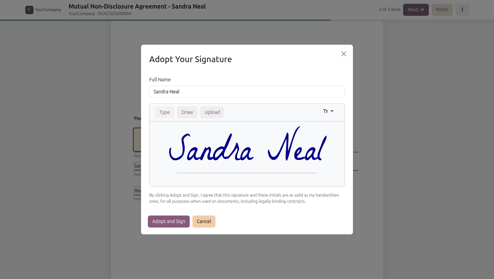
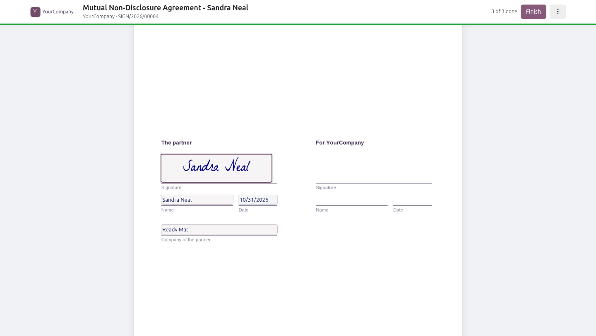
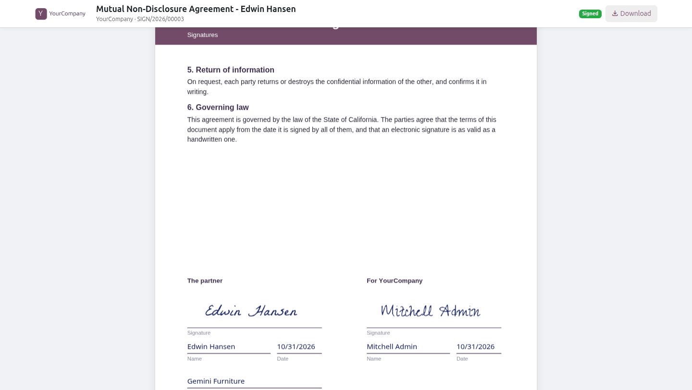
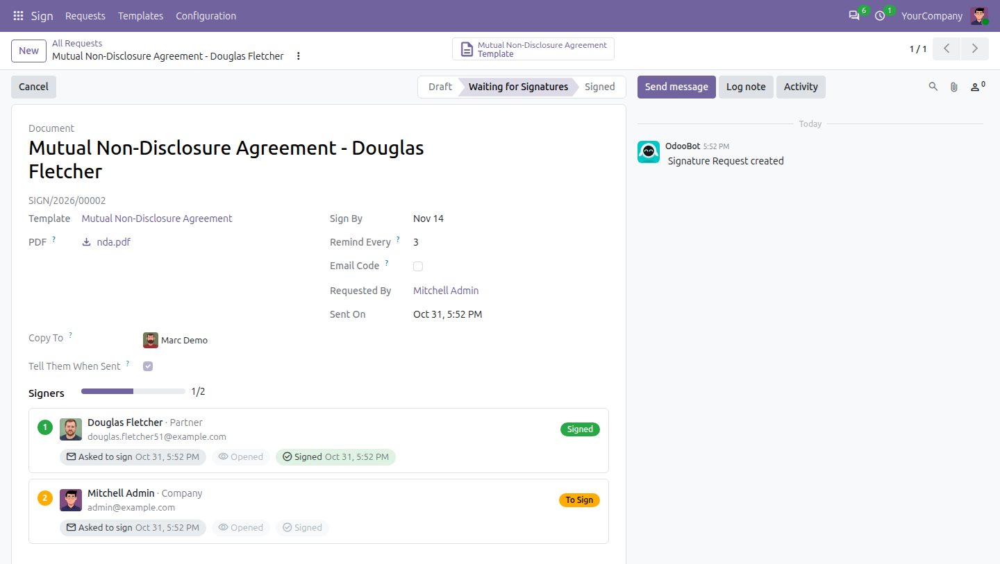
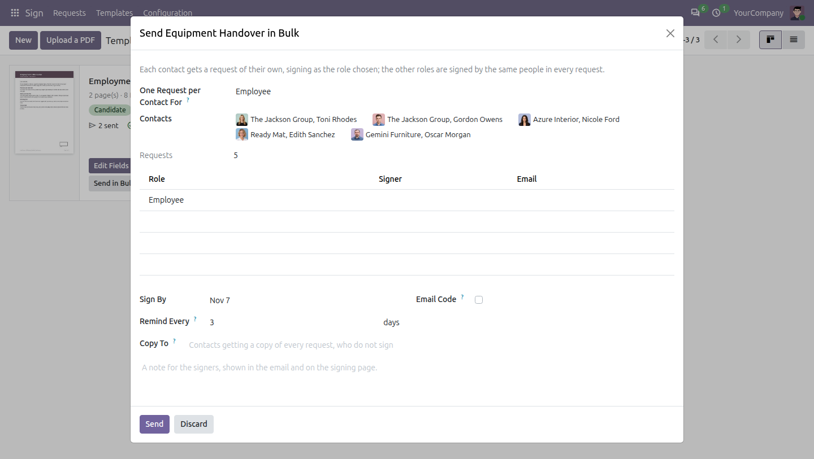
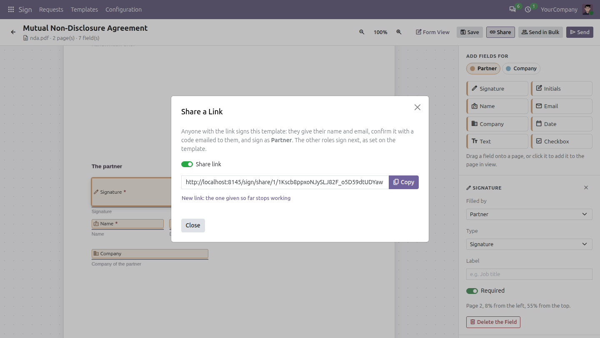

100% Free
Open source · LGPL-3
Odoo 20 Community
Sign
Electronic signatures for Odoo Community. Turn any PDF into a template, drop the fields of each signer on its pages, and send it: they sign from a link, on a phone or a computer, in their order, and everyone gets the signed PDF with its certificate.
Templates from PDF filesDrag and drop editorSigning on the pagePhones tooSigning orderCopy recipientsSend in bulkPublic share linkSignature certificate

The signer fills their fields where they are on the pages, and adopts a signature typed, drawn or uploaded.
Any PDF
becomes a template
8 fields
signature to checkbox
100% free
open source, LGPL-3
Completely free. Your feedback makes it better.
No paid edition, no limits: the code is open (LGPL-3). Every feature is covered by automated tests. Tell us what works, what does not and what you miss.
How it worksUpload, place, send
From a PDF to a signed document in three steps. The signers need nothing but the email.
1
Upload a PDF
A contract, an offer letter, an NDA: it becomes a template, sent as many times as needed. Its first page shows on its card.2
Place the fields
Drop the signature, initials, name, date, text and checkboxes of each role on the pages, in the colour of the role.3
Send it
Choose who signs as each role. They sign from the link of the email, in their order; everyone gets the signed PDF.
TemplatesEvery PDF ready to send
The templates show as cards with the first page of their PDF, their roles, how many requests were sent, signed and made from the shared link, and the buttons to edit them, send them or send them in bulk.
The editorDrag and drop the fields
Pick a role, then drop its fields on the pages: signature, initials, name, email, company, date, text and checkbox. Move and resize them with the mouse, make them optional, give them a label. The fields keep their place whatever the zoom and the size of the page.
The signing pageSigning on the document itself
The signer sees the pages of the document with their fields where they belong. Start and Next guide them from one field to the next; a signature drawn, typed or uploaded once fills the others with a click; the name, company, email and date are filled in for them. What the signers before them filled shows on the pages. On a phone too, without an account.

Filled in on the pages, ready to finish

Signed by everyone: the values stamped on the PDF
Following the requestsWho signed, who is next
Sign, Requests: To Sign, Waiting for Others, Completed and All, as cards grouped by status, each with the progress of the signatures, the signers marked with their status, the deadline (red once past) and how it was sent. The request shows the timeline of its signers: asked, opened, email verified, signed or declined, with the dates.

The request, its signers in their order, and the signed PDF, the record and the template one click away.
Send to manyIn bulk, or by a public link
Send in Bulk makes one request per contact for one role, e.g. the same agreement to 50 customers; the other roles sign as usual. Share a template by a link: the visitor gives their name and email, confirms it with a code, and signs straight away.

Send in Bulk: one request per contact

The shared link, with an email code
FeaturesEverything a signature needs
From the first upload to the proof of who signed.
📄
Templates from PDF files
Any PDF becomes a template, its roles signing in their order; those of the same sequence sign together.✍️
Eight kinds of fields
Signature, initials, name, email, company, date, text and checkbox, required or optional, with a label.📱
Signing on any screen
On the pages of the document, guided field by field, on a phone or a computer, without an account. Decline with a reason.📧
Email code
Optionally, the signer confirms their email with a code before signing.👥
Copy recipients
Contacts who do not sign: told when it is sent, and given the signed PDF with a link to follow it.📨
Send in Bulk
One request per contact for one role; more than 20 are sent in the background.🔗
Public share link
Anyone with the link signs after confirming their email, limited per hour by email and by IP address.⏰
Reminders and deadlines
Reminders every few days; a request expires after its deadline.
ProofA signature you can stand behind
Every signed PDF ends with a certificate, and everything that happens is kept.
📜
Signature certificate
Who signed, when, from which IP address and browser, and the SHA-256 fingerprint of the document sent.🛡️
Evidence nobody can change
Sent, opened, email verified, signed: each event is logged and cannot be changed or deleted.🔍
Public verification
A page confirms a signed document from the reference on its certificate.👤
Signatures in the portal
The signers find the documents sent to them in the Signatures page of the portal; users sign from Sign, Requests, To Sign.
With Print TemplatesCertificates and letters signed too
With Print Templates, the bridge Sign: Print Templates installs by itself: the issued prints are sent for signature, the signers named by their template, with placeholders such as [signature: Employee] where each signs in the text. Sign works without it.
WhyFrom printing and scanning to one link
What changes the day Sign is installed.
| Without Sign | With Sign |
|---|
| Getting a signature | ✗ Print, sign, scan, email back | ✓ One link, signed in a minute on any screen |
| Several signers | ✗ Chasing each of them | ✓ In their order, asked and reminded by themselves |
| Where it stands | ✗ Asking around | ✓ Cards by status, the timeline of each signer |
| Many people | ✗ One email at a time | ✓ Send in bulk, or share one public link |
| Proof | ✗ A scan of a signature | ✓ A certificate, a fingerprint and the evidence of each step |
How to use it
1. Give the User access of Sign to the people who send documents, the Administrator access to those who see them all.
2. Sign, Templates, Upload a PDF: place the fields of each role in the editor, and Save.
3. Send: choose who signs as each role, the copy recipients and the deadline. Or Send in Bulk, or Share a link.
4. Follow the requests in Sign, Requests; sign the documents sent to you from To Sign.
Good to know
✓ The first page of a template is drawn by the browser the first time its card is shown, then kept: nothing to install on the server.
✓ The requests a visitor of a shared link may make per hour are set by the system parameters om_sign.share_limit_email (5) and om_sign.share_limit_ip (20).
✓ Developers: the sign.mixin gives any model a Signatures smart button and hooks called when a document about the record is signed, declined or cancelled.
✓ Works with Odoo 20 Community and Enterprise. On Enterprise, it cannot be installed with the Sign app of Odoo: use one or the other.

Keeping it simple